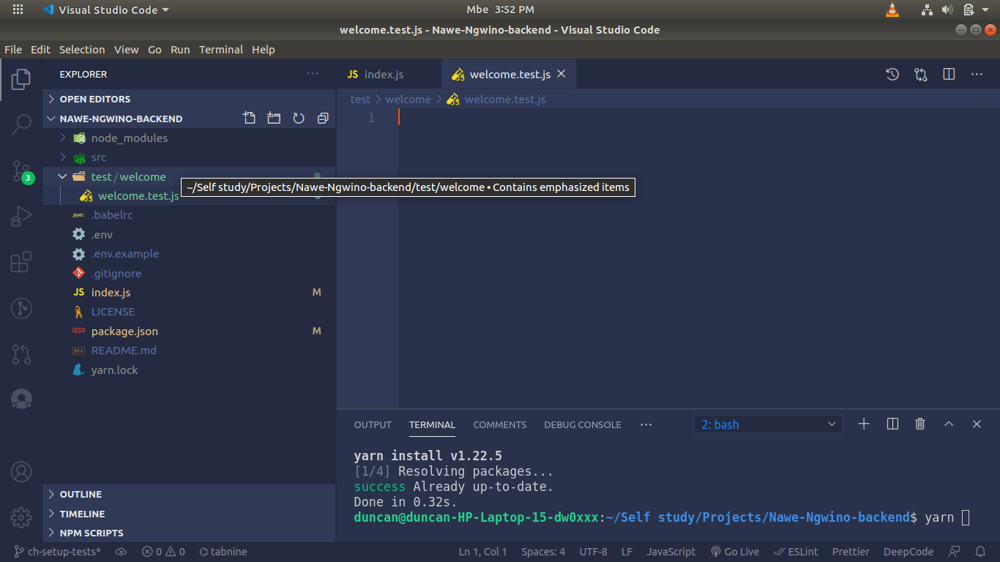
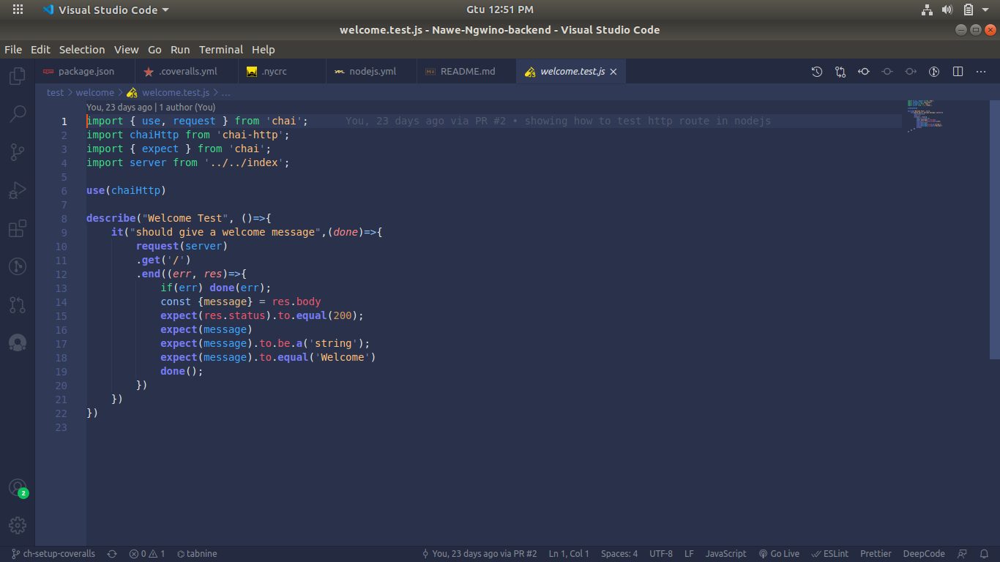
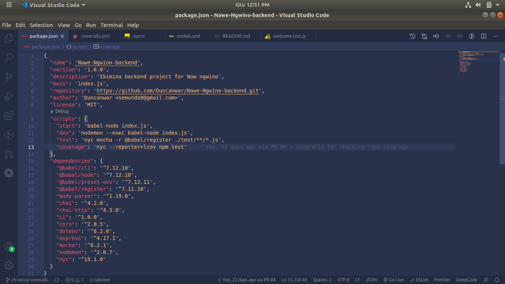
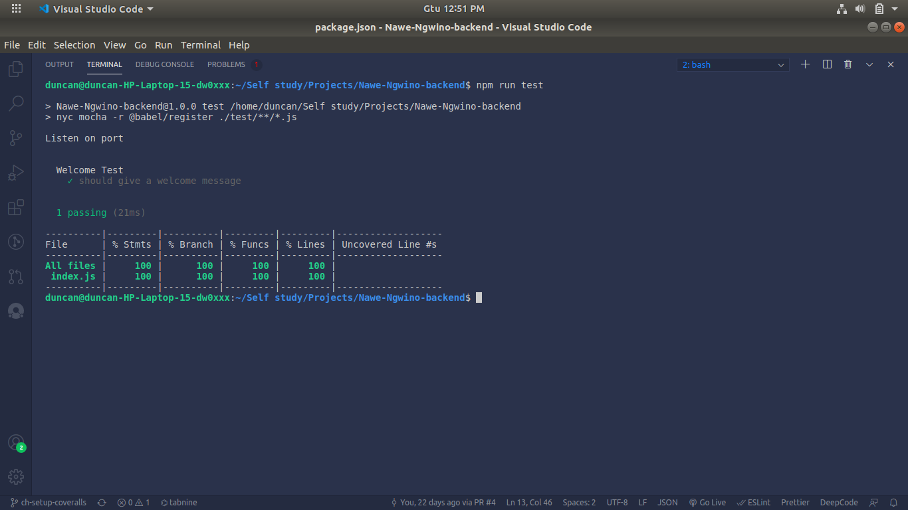

In this article, I assume that you have already been working with the node js app with a route that you want to state.
I am using ES6+
This my file that we are going to test.
Before we start writing code for testing, we have to know some libraries that can be used for the integration test in Node js.
In Node JS we have man libraries for testing like:
- Mocha
- Jest
-Supertest and other Many more
N.B: We are starting. First of all, we have to install test libraries that will help us with the integration test.
npm install mocha, chai, chai-http
After installing those package you create a test folder in the root directory, in test folder create file name welcome.test.js

After creating a welcome test file. Now we are going to write a test to test get route at ”/”.Below are the codes
When we write a test, we assume the value and we test to see if the returned value will be equal to the value we assumed before. That is the reason for the word expect. Before we run the test we have to add a test script in package.json so that we can be able to run the test above.
When we write a test, we assume the value and we test to see if the returned value will be equal to the value we assumed before. That is the reason for the word expect. Before we run the test we have to add a test script in package.json so that we can be able to run the test above.

Thank you for reading this blog about setting an integration test in NodeJs with HTTP route.
For more information about the frameworks, I have used mocha and chai.